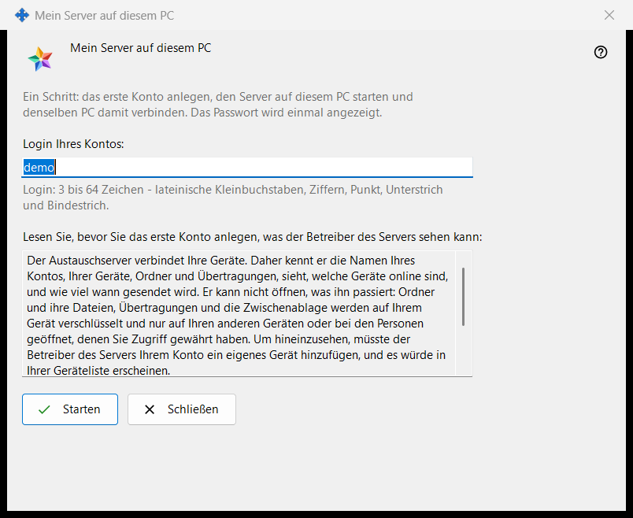
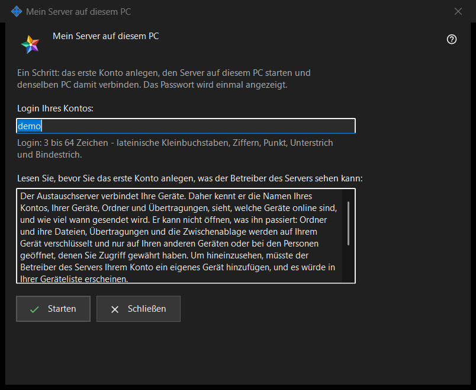

Mein Server auf diesem PC
Verwendungszweck
Richtet in einem Durchgang einen persönlichen Media Exchange Server auf diesem PC ein: Der Assistent legt das erste Konto an, startet den Server und verbindet denselben PC damit. Er öffnet sich über die Schaltfläche «Diesen PC als meinen Server verwenden..» auf der Seite Media Exchange Server der Einstellungen von Share Manager, die nur angezeigt wird, solange auf diesem PC noch kein Server eingerichtet ist.


In dieser Reihenfolge
- Prüfen Sie das vorgeschlagene Login, das aus Ihrem Windows-Benutzernamen übernommen wird, oder geben Sie ein eigenes ein.
- Lesen Sie die Erklärung, was der Betreiber des Servers sehen kann.
- Klicken Sie auf «Starten» und warten Sie die vier Schritte ab.
- Kopieren Sie das Passwort sofort, danach den Fingerabdruck oder die Verbindungszeichenfolge für Ihre anderen Geräte.
- Klicken Sie auf «Schließen».
Die Elemente
Login
«Login Ihres Kontos:» nimmt 3 bis 64 Zeichen an: lateinische Kleinbuchstaben, Ziffern, Punkt, Unterstrich und Bindestrich; Großbuchstaben werden in Kleinbuchstaben umgewandelt. Der Hinweis unter dem Feld wechselt zur Warnfarbe, solange der Text kein Login sein kann, und «Starten» bewirkt nichts, bis er eines sein kann.
Was der Betreiber sehen kann
Das schreibgeschützte Feld unter «Lesen Sie, bevor Sie das erste Konto anlegen, was der Betreiber des Servers sehen kann:» listet auf, was ein Serverbetreiber über Konten, Geräte, Ordner, Übertragungen und die Zwischenablage sehen kann, was der Server nicht lesen kann und wie viele Tage Protokolle aufbewahrt werden. Auf Ihrem eigenen Server sind Sie der Betreiber.
Schritte und Fehler
«Starten» führt vier Schritte aus und nennt jeweils den aktuellen: «Konto wird angelegt..», «Server wird gestartet..», «Zertifikat wird geprüft..» und «Dieser PC wird verbunden..». Währenddessen ist das Login gesperrt und das Fenster lässt sich nicht schließen. Wurde kein Konto angelegt, nennt ein Satz den Grund, zum Beispiel «Dieses Konto gibt es schon - wählen Sie ein anderes Login.»; korrigieren Sie das Login und klicken Sie erneut auf «Starten».
Ergebnis und Adressen
Bei Erfolg meldet das Fenster «Fertig: Der Server läuft, das Konto ist angelegt und dieser PC ist damit verbunden.» und listet «Adresse für diesen PC:», «Adresse für andere Geräte:» (dort steht «nicht festgelegt - tragen Sie ihn in den Einstellungen des Austauschservers ein», bis diese Adresse festgelegt ist), «Benutzername:», «Passwort (einmal angezeigt):» und «Zertifikat-Fingerabdruck:» auf. Sobald die Adresse für andere Geräte festgelegt ist, kommt «Verbindungszeichenfolge:» hinzu. Ist der Server nicht gestartet, existiert das Konto trotzdem, und sein Passwort wird unten einmal angezeigt.
Passwort und Kopieren
Das Passwort ist maskiert. «Passwort anzeigen» zeigt es an; «Passwort kopieren» legt es auf dem geschützten Weg in die Zwischenablage, der es aus dem Zwischenablageverlauf von Windows und aus der Cloud-Zwischenablage heraushält. Das Fenster zeigt es nur dieses eine Mal, es sei denn, «Kontopasswörter auf diesem PC speichern» ist eingeschaltet. «Fingerabdruck kopieren» und «Zeichenfolge kopieren» sind einfache Kopien: Keine von beiden enthält ein Passwort. Andere Geräte brauchen Adresse, Login, Passwort und Fingerabdruck, den sie bei der ersten Verbindung vergleichen.
Schließen
Wurde das Passwort weder kopiert noch angezeigt noch auf diesem PC gespeichert, fragt «Schließen» nach: «Schließen, ohne das Passwort zu kopieren?» mit Nein als Standardantwort, weil das Passwort nicht erneut angezeigt, sondern nur zurückgesetzt werden kann.
Managereinstellungen · SFTP-Freigabeeinstellungen · Einstellungen des Austauschservers